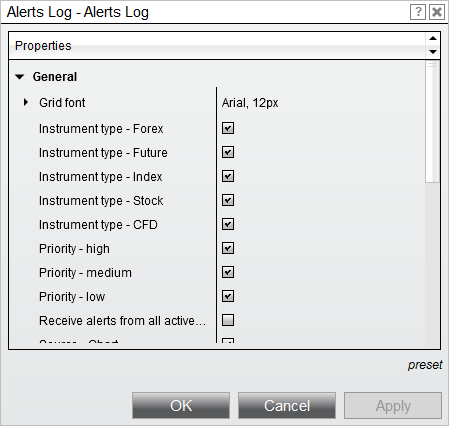

|
<< Click to Display Table of Contents >> Alerts Log Properties |


|
Alerts Log Properties
|
<< Click to Display Table of Contents >> Alerts Log Properties |
|
The Alerts Log window can be customized through the Alerts Log Properties window.
 How to access the Alerts Log Properties window
How to access the Alerts Log Properties window
You can access the Alerts Log properties dialog window by clicking on your right mouse button and selecting the menu Properties. |
 Available properties and definitions
Available properties and definitions
The following properties are available for configuration within the Alerts Log Properties window:

Property Definitions
|
 How to preset property defaults
How to preset property defaults
Once you have your properties set to your preference, you can left mouse click on the "preset" text located in the bottom right of the properties dialog. Selecting the option "save" will save these settings as the default settings used every time you open a new window/tab.
If you change your settings and later wish to go back to the original settings, you can left mouse click on the "preset" text and select the option to "restore" to return to the original settings. |